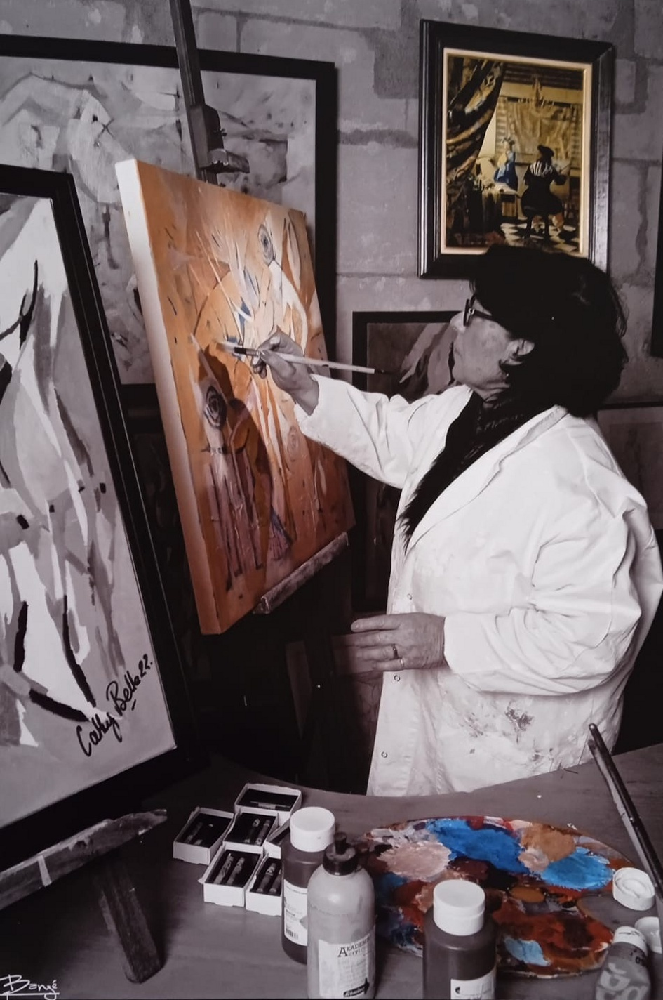

Cathy Belle / Artist CV
A life
in painting.
From drawing to texture,
from abstraction to the living world.
A career shaped by exhibitions, exploration in painting and the joy of teaching.
Explore the artist CV
01 / Exhibitions
Solo
& group
2026
- Solo exhibitionDans le Jardin
2022
- Printemps des Femmes, L’Art au Féminin — Chambray-lès-Tours (37)
- 75 Artists Exhibition — A Work for Tours Hospital (37)
- Exhibition at Le Serpent à Plumes — Tours (37)
2021
- Lionel Couture Art Show — Saint-Pourçain-sur-Sioule (03)
2020
- Fragments d’Elle — Media library, Azay-le-Rideau (37)
2018
- Atelier Mode d’emploi, Ponts des Arts — Artannes (37)
- Group exhibition, Galerie Lansari — Artannes (37)
2016
- Talents de Femmes — Femmes de Talent, Inner Wheel — Sarlat (24)
- Les Hivernales — Sarlat (24)
2003–2016
- Permanent exhibition, Atelier Villa Mege — Sarlat (24)
1995–2003
- Private gallery — Candes-Saint-Martin (37)
02 / Other exhibitions and events
Venues & events
Exhibitions and events listed without dates.
- Rencontres Internationales d’Art Mural — Beaufort-en-Vallée (49)
- Contemporary installation De Beforter — Luxembourg
- Festival Rues des Arts — Nancy (54)
- Galerie 17 — Royan (17)
- Contemporary Art Show — Dammarie-les-Lys (77)
- Château de Coucillon (72)
- Salon des Artistes — Villevêque (49)
- Maison des Associations — Cinq-Mars-la-Pile (37)
- Saint-Grégoire Contemporary Art Exhibition — Rennes (35)
- Galerie Agnès Sorel — Loches (37)
- Carrés de Loches (37)
- Summer Art Show — Saint-Mathurin-sur-Loire (49)
- 4th Savonnières Biennial (37)
- My Heart France — Ballan, IEM Charlemagne (37)
- Galerie Art Présent — Paris (75)
- Town Hall — Ballan (37)
- Fêtes des Artistes — Beaulieu-lès-Loches (37)
- Maison du Don — Tours (37)
- Fêtes des peintres — Chanceaux (37)
- Chevalet de Touraine (37)
- EDF headquarters — Tours banks (37)
03 / Teaching
Learn.
Teach.
- Established workshops for community organisations
- School outreach
- Painting activities
- Independent workshops
- President of arts associations